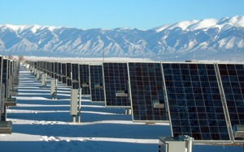

Solar energy
Solar energy, harnessed from the radiant power of the sun, stands as a beacon of sustainable innovation in the quest for cleaner power sources. Photovoltaic cells, commonly known as solar panels, convert sunlight into electricity, providing a decentralized and renewable energy solution. Solar power systems are versatile, ranging from small-scale rooftop installations to vast solar farms that harness the sun's energy on a grand scale. The technology's rapid advancements have significantly reduced costs, making solar energy increasingly accessible globally. This transformative energy source not only reduces reliance on traditional fossil fuels but also contributes to mitigating climate change, offering a ray of hope for a more sustainable and eco-friendly future.
Wind Energy
Wind energy, a stalwart in the renewable energy landscape, taps into the kinetic force of the wind to generate power. Wind turbines, with their towering blades, harness the wind's energy and convert it into electricity. Onshore and offshore wind farms have become prominent features on landscapes and coastlines, symbolizing a commitment to cleaner energy production. The scalability of wind power, from individual turbines to expansive wind farms, makes it a versatile and increasingly cost-effective option. As technology evolves, innovations like floating wind turbines promise to extend wind energy's reach into new frontiers, ensuring its role in the transition to a more sustainable energy future.

Geothermal Energy

Geothermal energy emerges from the Earth's internal heat, providing a reliable and renewable source of power. This energy manifests in various forms, from steam and hot water reservoirs to direct heating applications. Geothermal power plants leverage the Earth's natural heat to generate electricity, reducing dependence on fossil fuels and minimizing greenhouse gas emissions. This sustainable energy source is characterized by its reliability, as it produces a constant and consistent output, making it an attractive option for regions seeking a stable power supply. As advancements in geothermal technology continue, the potential for widespread adoption grows, offering a sustainable pathway toward a cleaner energy landscape.
Hydropower
Hydropower, the harnessing of energy from moving water, has been a cornerstone of renewable energy for centuries. Dams and turbines convert the kinetic energy of flowing rivers into electricity, providing a scalable and reliable energy source. Large hydropower plants contribute significantly to global electricity generation, supplying both urban and rural areas with clean power. However, the environmental impact of dam construction and alteration of river ecosystems has led to a growing emphasis on small-scale and environmentally friendly hydropower solutions. From the majestic Hoover Dam to innovative run-of-river projects, hydropower continues to play a vital role in the renewable energy portfolio.

Ocean energy

Ocean energy, a frontier of renewable power, draws inspiration from the vast and dynamic forces of the world's oceans. Tapping into the energy contained in tides, waves, and ocean currents, various technologies aim to harness the immense power of the sea. Tidal energy, generated by the gravitational pull of the moon, and wave energy, driven by wind patterns, present promising avenues for sustainable power generation. While ocean energy is still in its early stages of development, the potential to unlock a consistent and reliable energy source from the oceans holds great promise for a future where marine environments contribute significantly to the global renewable energy mix.
Bioenergy
Bioenergy, derived from organic materials and biomass, encompasses a diverse range of renewable resources. From the combustion of wood and agricultural residues to the production of biofuels like ethanol and biodiesel, bioenergy offers a flexible and multifaceted approach to sustainable power generation. Biomass power plants and biogas facilities harness organic materials to produce heat, electricity, and biofuels, reducing reliance on fossil fuels and curbing greenhouse gas emissions. The circular nature of bioenergy, where carbon is absorbed during the growth of plants and released during combustion, contributes to its status as a carbon-neutral or low-carbon energy source. As technology advances and sustainable practices guide its development, bioenergy continues to evolve as a crucial component in the transition to a greener and more resilient energy future.